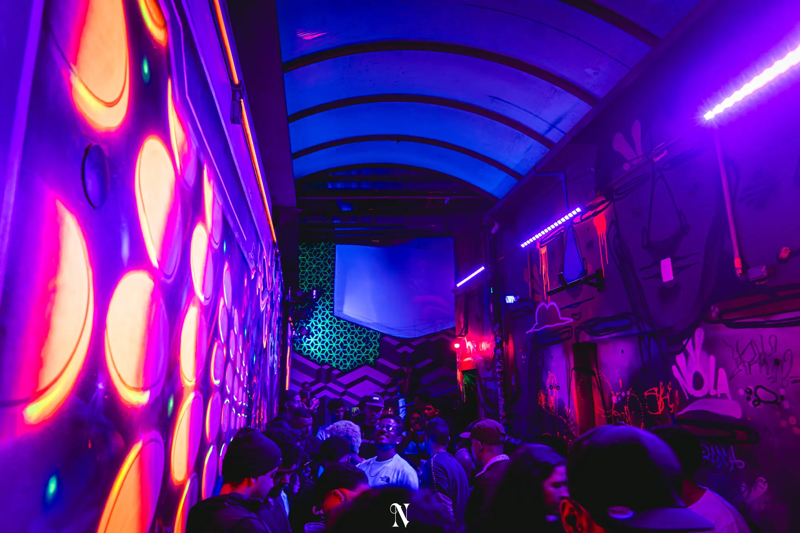
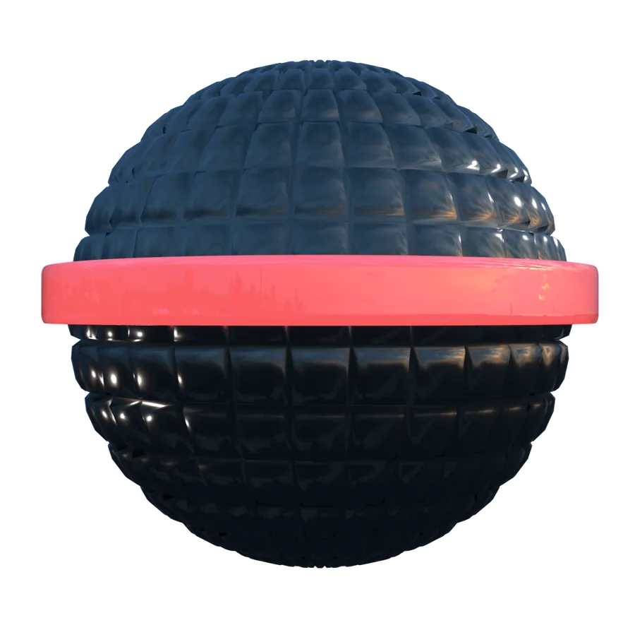
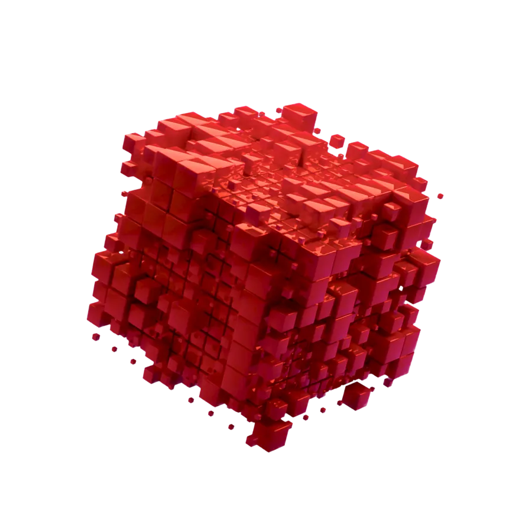
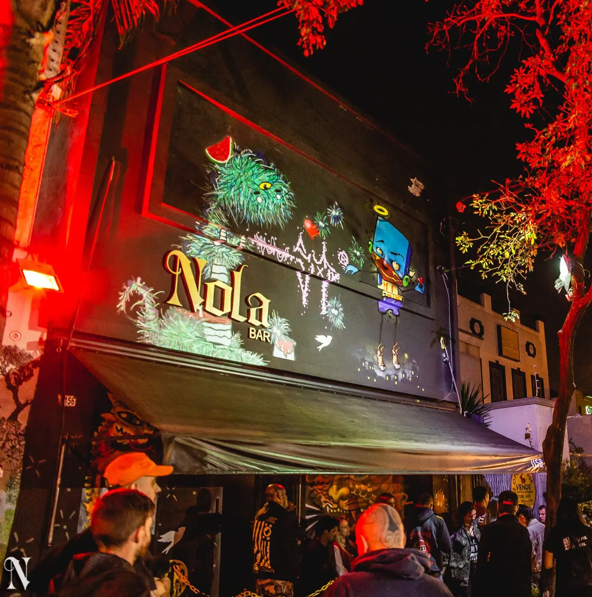
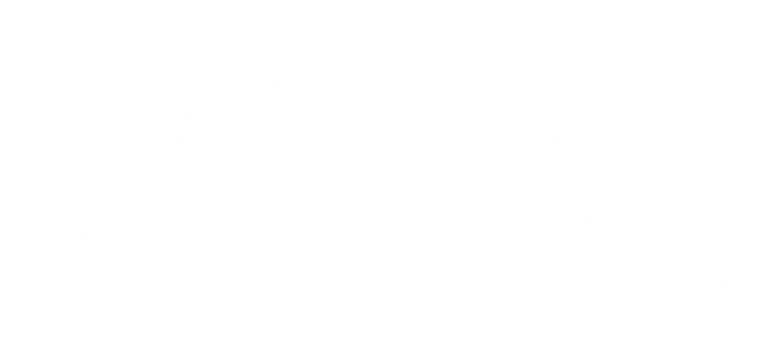
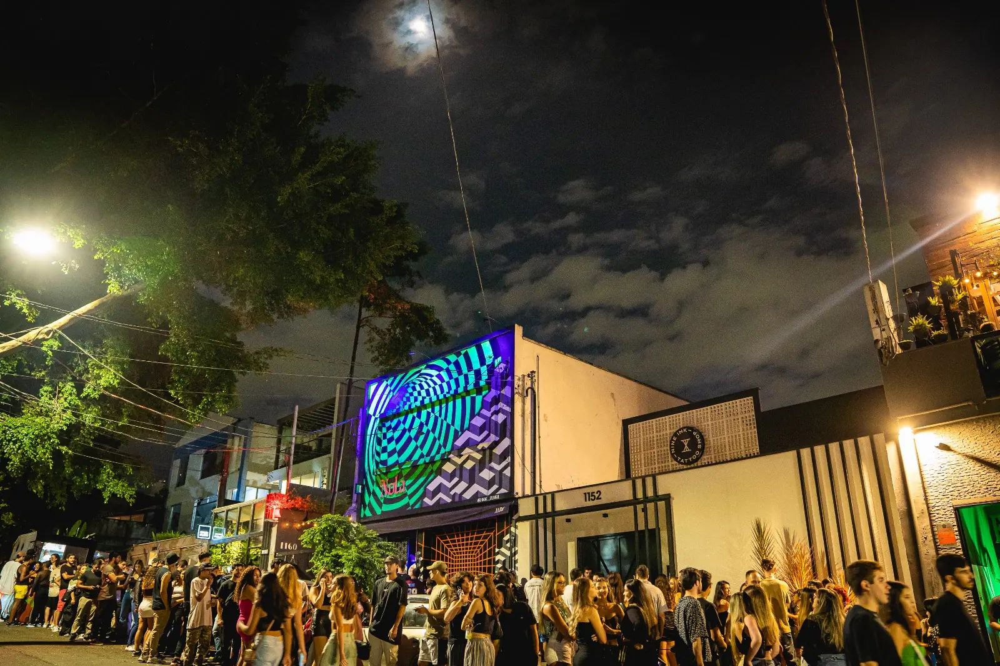

Comemore no Nola
Traga a turma, garanta a entrada de todo mundo e deixe a noite por nossa conta. Conte quantas pessoas e a data: a gente monta o pacote.
Reservar aniversário


Vila Madalena · SP · desde 2013
Trap, funk e rap em duas pistas que viram a madrugada. Open bar nas sextas.
SextaSábadoVésperas de feriado22h às 5h
Ingressos antecipados pelo Sympla, nome na lista VIP pelo WhatsApp. A agenda da semana seguinte entra aqui e no Instagram toda quinta.
A agenda da próxima semana sai toda quinta no Instagram @_nolabar. Enquanto isso, garanta o nome na lista VIP.
Sem ingresso antecipado? Dá para entrar com o nome na lista VIP, mandando mensagem no WhatsApp do Nola até a noite da festa.
Um bar, duas pistas que fervem a noite toda e gente que sabe viver. Treze anos de Vila Madalena.
O Nola abre na Vila Madalena e vira uma das baladas de rap mais respeitadas do Brasil: por aqui passaram Marcelo D2, Black Alien e muitos dos maiores nomes do rap nacional e gringo.
Uma década de noites, uma festa de aniversário inesquecível e um público que cresceu junto com a casa.
Moderno, psicodélico e atual: trap, funk, pop e as músicas do momento, em duas pistas, com open bar nas sextas e festas que viram madrugada.


Moderno, psicodélico e atual.
Comemore o aniversário na pista com a sua turma, ou entre de vez na lista do Nola. Tudo pelo WhatsApp, com resposta rápida.
Traga a turma, garanta a entrada de todo mundo e deixe a noite por nossa conta. Conte quantas pessoas e a data: a gente monta o pacote.
Reservar aniversárioManda um oi no WhatsApp e entra na nossa lista: você recebe a agenda da semana e os mimos antes de todo mundo, e o seu nome já fica na porta.
Entrar na lista VIPToda semana sobem as fotos das noites. Toque para ver grande.
Dos mais populares aos mais gourmet: a proposta é ficar o mais louco possível com o menor custo, sem perder a qualidade. Open bar nas sextas; nas outras noites, o bar inteiro à sua disposição.
No coração da Vila, a poucos minutos do metrô Fradique Coutinho. Chegue de app e volte quando o sol nascer.
Rua Mourato Coelho, 1156
Vila Madalena · São Paulo · SP · 05417-002Sexta, sábado e vésperas de feriado
Das 22h às 5h. Confira a agenda da semana acima.